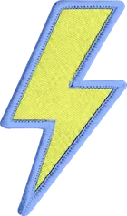
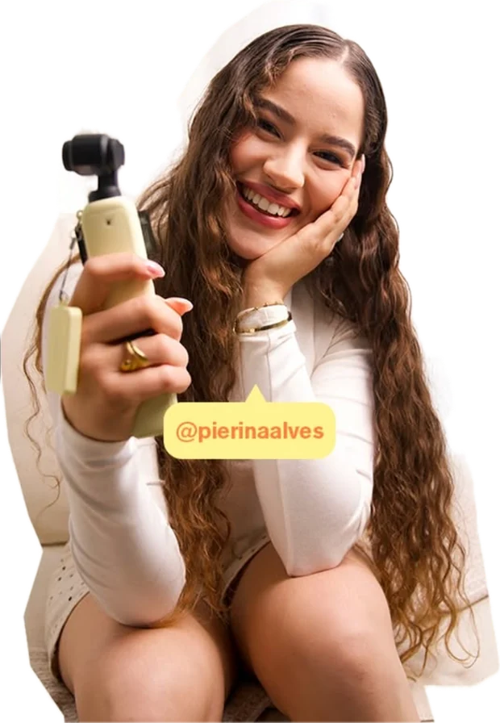
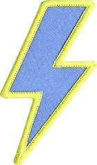
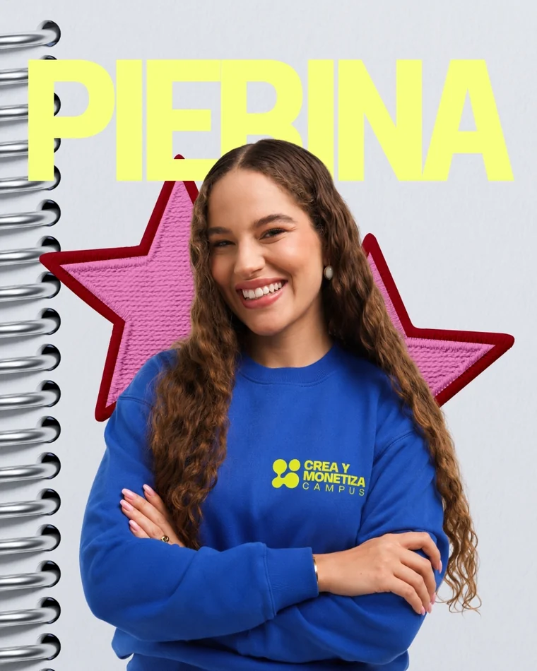

Lo habitual
Un curso grabado
- Compras el acceso y avanzas sola.
- Videos sueltos sin orden ni criterio de avance.
- Nadie revisa lo que haces ni te corrige.
- Terminas con apuntes, no con activos.
- El día que se acaba, se acaba todo.

Admisiones · Crea y Monetiza Campus
Bienvenida a Crea y Monetiza Campus, una formación integral para creadoras de contenido que quieren profesionalizar su talento, construir una marca con dirección y aprender a generar oportunidades reales dentro del mundo digital.
Todo dentro de una misma ruta formativa.
Carta de bienvenida · Pierina Alves
Durante años he creado contenido, trabajado con marcas, probado estrategias, cometido errores y acompañado a cientos de creadoras en su proceso.
Y había algo que seguía viendo una y otra vez: mujeres con muchísimo talento intentando construir una carrera con información suelta.
Un curso para aprender edición. Otro para entender redes. Tutoriales sobre UGC. Videos sobre cómo contactar marcas. Plantillas, prompts, consejos… pero ninguna ruta que conectara todo.
Por eso nació Crea y Monetiza Campus.
Quería construir un lugar donde una creadora pudiera formarse de manera integral y entender cómo pasar de tener talento y muchas ideas a tener estructura, criterio, herramientas y una dirección profesional.
En este video quiero contarte de dónde viene el Campus, qué significa para mí y por qué hemos decidido construirlo de esta manera.

Quería crear el lugar que yo habría necesitado cuando empecé.— Pierina Alves
Marcas con las que ha trabajado
¿Qué es Crea y Monetiza Campus?
Crear contenido puede convertirse en una profesión.
Pero para construir una carrera necesitas mucho más que saber grabar un buen video.
Eso es lo que conecta Crea y Monetiza Campus.
Una formación integral donde aprendes, implementas, recibes acompañamiento y construyes los activos que necesitarás para desarrollar tu carrera como creadora.
Lo habitual
El Campus
En qué te estás formando
Construyes una marca personal con una identidad clara, coherente y reconocible.
Aprendes a tomar decisiones detrás de tu contenido y dejar de publicar sin dirección.
Desarrollas criterio para conceptualizar, grabar, comunicar y producir piezas de contenido profesionales.
Trabajas una presencia digital capaz de comunicar quién eres, qué haces y qué valor puedes aportar.
Aprendes a presentar tus servicios, estructurar propuestas, negociar y relacionarte profesionalmente con marcas.
Exploras diferentes caminos para transformar tus habilidades creativas y digitales en oportunidades.
Aquí no trabajamos únicamente tu contenido. Trabajamos la creadora profesional que hay detrás de él.

Tu plan académico
Tres meses para construir tus bases.
Tres meses para llevarlas al mercado con acompañamiento.
Etapa 01
Meses 1–3 · Formación
Comienzas con una ruta clara para entender qué necesitas trabajar, qué debes priorizar y cómo avanzar dentro del Campus.
Una marca personal que trasciende construye una base sólida.
Etapa 02
Meses 4–6 · Implementación profesional
En esta etapa empiezas a moverte como creadora profesional: mostrar tu trabajo, conectar con marcas, detectar oportunidades y comenzar a posicionarte dentro del mercado.
Y durante todo este proceso seguirás contando con acompañamiento para revisar, corregir y optimizar lo que estás implementando.
Dentro del Campus
Cada alumna accede a una formación estructurada por materias, clases, recursos y ejercicios diseñados para profesionalizar cada área de su carrera como creadora.
El plan de estudios es exclusivo para alumnas matriculadas en Crea y Monetiza Campus.
Materias organizadas para que sepas qué trabajar y en qué orden.
Contenido formativo acompañado de herramientas, ejemplos y materiales de aplicación.
Cada bloque incluye trabajo práctico para llevar lo aprendido a tu propia realidad.
El pensum completo se desbloquea una vez formalizas tu matrícula.
Conoce el proceso de admisión y da el primer paso para acceder a tu formación completa dentro del Campus.
Aquí también se evalúa
Por eso tu progreso no se mide únicamente por las clases que has visto.
Durante tu recorrido tendrás diferentes formas de poner en práctica lo aprendido.
Aquí no vienes a coleccionar clases terminadas. Vienes a construir evidencia de tu evolución.
Proyecto final
Lo llamamos:
La Tesis Creativa
Durante tus meses dentro del Campus irás construyendo diferentes partes de tu carrera profesional.
Al finalizar tendrás que conectarlas dentro de un proyecto que represente lo que has desarrollado.
Tu proyecto podrá integrar:
No puedes completar tu recorrido únicamente viendo clases.
Queremos que cuando llegues al final puedas mirar todo lo que construiste durante estos meses y ver, de forma tangible, tu evolución como creadora.
El Campus también pasa en directo
Durante tu recorrido tendrás acceso a diferentes espacios en vivo.
Sesiones especiales sobre temas estratégicos, herramientas, tendencias y oportunidades para creadoras.
Espacios para llevar preguntas concretas y resolverlas junto al equipo.
Sesiones destinadas a analizar casos, procesos y aplicaciones reales.
Momentos para conectar con otras alumnas y vivir el Campus más allá de la plataforma.
Tu equipo
Cada área necesita una mirada diferente.
Por eso dentro del Campus encontrarás especialistas que acompañan diferentes partes de tu formación.

Pierina AlvesDirección del CampusDirección del Campus · Estrategia y creación
Fundadora de Crea y Monetiza.
Creadora de contenido y mentora especializada en estrategia, UGC, posicionamiento y monetización.
Pierina dirige la visión del Campus y comparte el conocimiento y los sistemas que ha aplicado en su propia carrera y en los procesos de cientos de creadoras.
Seguimiento e implementación
Acompaña el proceso de ejecución para ayudarte a mantener dirección, detectar bloqueos y convertir lo aprendido en acciones concretas.
Inteligencia artificial aplicada, organización y productividad
Te ayuda a entender cómo incorporar inteligencia artificial a tu trabajo como creadora para investigar, organizar, producir y optimizar procesos sin sustituir tu criterio creativo.
Y a lo largo del Campus podrás encontrar nuevas especialistas, invitadas y masterclasses en áreas específicas de tu desarrollo profesional.
Experiencia profesional
Aprender a crear contenido es solo una parte.
También necesitas aprender qué hacer con esas habilidades cuando llega el momento de presentarte profesionalmente.
Durante tu recorrido trabajarás en:
Dentro del Campus tendrás acceso a recursos diseñados para acercarte al mercado profesional.
Información que te ayude a entender dónde buscar y cómo presentarte.
Porque una formación para creadoras no estaría completa si después de aprender no supieras cómo empezar a moverte profesionalmente.
El final de tu recorrido
Completar tu recorrido significa haber avanzado por tu plan de estudios, desarrollado tus entregables y presentado tu Proyecto Final.
Y queremos celebrar ese momento como corresponde.
Encuentros especiales en España para celebrar juntas el cierre del recorrido.
[Fechas según calendario de cada cohorte]
Si formas parte del Campus desde otro país y no puedes asistir presencialmente, podrás vivir también tu cierre de manera online.
Al completar los requisitos del Campus recibirás tu certificado de finalización de Crea y Monetiza Campus.
Antes de aplicar
Nos importa mucho quién entra al Campus porque queremos construir una comunidad de creadoras que realmente quieran profesionalizarse.
Antes de incorporarte queremos conocerte.
Completa tu información y cuéntanos brevemente sobre ti y tus objetivos.
Tendrás una conversación con nuestro equipo para conocer tu situación actual y hacia dónde quieres avanzar.
Revisamos si el Campus encaja con tus objetivos y si podemos acompañarte en el punto en el que te encuentras.
Si tu perfil encaja con la formación y hay disponibilidad para incorporarte, durante la llamada conocerás todos los detalles de acceso.
Completar el proceso de admisión no garantiza automáticamente una plaza.
Sé de las primeras en enterarte de todo lo que pasa en el Campus.
Oficina de admisiones
Registro prioritario
Formulario de interés
Crea y Monetiza CampusMás mujeres creando la vida que aman.
Preguntas frecuentes
No necesitas tener una carrera consolidada como creadora para aplicar.
Dentro del proceso de admisión evaluaremos tu punto de partida para entender si el Campus encaja contigo.
No.
La formación trabaja tus habilidades, posicionamiento, estrategia y profesionalización. Tu número de seguidores no determina por sí solo tu capacidad para construir oportunidades.
Sí.
El Campus está diseñado para recibir creadoras desde diferentes países.
La formación y el acompañamiento principal se desarrollan online para que puedas avanzar desde donde estés.
Además, pueden existir experiencias y encuentros presenciales vinculados al Campus.
Tu recorrido principal dentro del Campus tiene una duración de 6 meses.
Sí.
Queremos que apliques lo aprendido durante el proceso, por eso diferentes materias incluyen ejercicios, implementación y entregables.
Sí.
Al finalizar tu recorrido desarrollarás tu Proyecto de Graduación, donde integrarás diferentes elementos que has construido durante tu formación.
Sí.
El acompañamiento y seguimiento forman parte de la experiencia del Campus.
Al completar los requisitos del recorrido recibirás tu título como Creadora Profesional.
Es un espacio de recursos relacionados con marcas, agencias, plataformas y oportunidades que pueden ayudarte durante tu etapa de profesionalización.
El primer paso es completar tu proceso de admisión y agendar una entrevista con nuestro equipo.
Todas las condiciones de incorporación se explican durante la entrevista de admisión una vez que conocemos tu situación y confirmamos que el Campus puede encajar contigo.
Puedes entrar al registro prioritario para recibir directamente las próximas fechas, convocatorias y novedades.